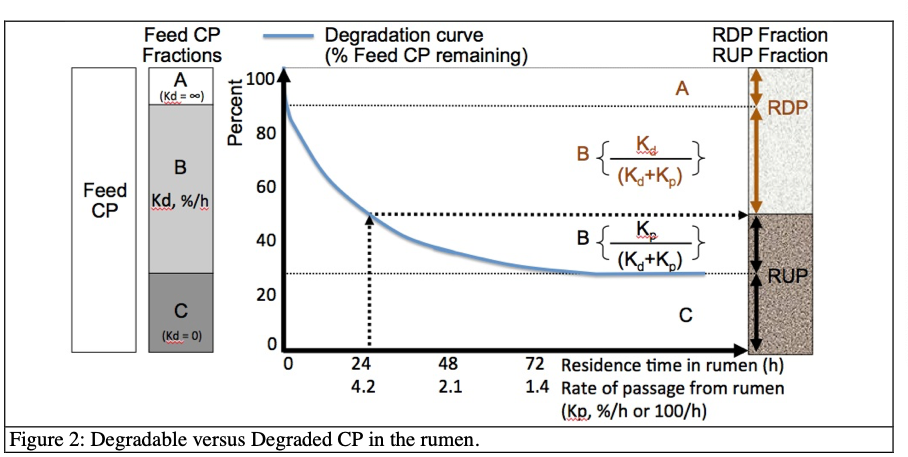

Chapter 5 Protein
Learning Objectives
Define the major protein supply fractions in dairy nutrition, including CP, RDP, RUP, MP, NP and describe how each is determined.
Differentiate essential, non-essential, and conditionally-essential amino acids.
Discuss why AA, and not just nitrogen, are considered in the NASEM
- model.
Explain the concept of a “limiting AA” and discuss its relevance (and complications) when applied to dairy nutrition.
Explain the goals of protein nutrition in terms of economic and environmental tradeoffs.
List the protein demands (e.g., maintenance, lactation) that comprise the requirements for various life stages.
In-class activity - whiteboard drawing of the N cycling in a cow.
5.2 Opposite: starting with no info on milk, predict milk protein
Create a diagram similar to Fig. 3-1 energy breakdown in NASEM book?
5.9 Background
5.9.1 Defining terms (From Michel & Marina)
The simplest term to refer to protein in a ration is “crude protein” (CP). The CP fraction in a feed is determined by the laboratory analysis of the total nitrogen (N) content in the sample multiplied by 6.25 (Eq. 1). This determination makes two important assumptions. First, it assumes that all N in the feed is amino acids (AA) linked together in the form of proteins. However, this is not the case because some of the N in most feed is in the form of non-protein N (NPN), such as urea, ammonia, nucleotides (DNA and RNA), and choline among others. Because of this assumption the result of the laboratory analysis is referred to as CP instead of “true” protein. The NPN fraction of CP is of little use to non-ruminant animal species but ruminants, or more exactly the microbes that populate the rumen, are able to use NPN to grow. Then, the microbial mass that flows out of the rumen serves as a source of true protein to the host animal (the cow). The second assumption built into any CP value is that proteins contain 16% N, which means that in each 100 g of protein, there are 16 g of N. Thus 1 g of N measured in the laboratory corresponds to 6.25 g of protein (100/16). Thus, remember that the N content of a feed will always be 6.25 times lower than its CP content. In reality 16% N in protein is an average obtained across many feed protein sources and N content of proteins actually varies from 13 to 19%, which should equate to variable conversion factors ranging from 5.26 to 7.69 (FAO, 2003). One notable exception for us as nutritionists interested in milk production, is that N content of milk protein (casein) contains 15.67% N. Thus the N to CP conversion factor is 100/15.67 = 6.38. Another important notable fact that results from the assumptions made in calculating CP is that some feed may have a CP value greater than 100%! For example, feed grade urea, which can be used in low CP dairy rations as a source of NPN for rumen microbial growth, contains usually 46% N and thus the CP of urea is 287%.
\[ CP = N * 6.25\] where CP is crude protein expressed in any unit (% of the DM, grams, or g/d for example), N is N content in the same unit, and 6.25 is a conversion factor that assumes that on average 1 g of N is found is 6.25 g of protein.
In general terms, one can say that the goal of protein nutrition is to supply the adequate amounts of amino acids to the small intestine to support a desired level of production with a minimum amount of dietary CP, to avoid N waste in the form of urinary urea-N (and energy waste for urea synthesis).
5.9.2 Metabolizable protein
The true protein digested postruminally (a sum of Digestible RUP (Dig-RUP) and digestible MiTP (Dig- MiTP) is absorbed as AA that reach the blood stream (portal vein) for transport to the liver. This pool of AA available for absorption into the blood is called Metabolizable Protein and is often abbreviated as “MP.” Thus similar to the metabolizable energy (ME) concept, MP refers to the “useful” nutrients (in this case AA) absorbed in the blood.
5.9.3 Metabolizable AA
According to the NASEM (2021) committee, although MP should be used to describe and assess diets, it is intestinally-absorbed AAs (rather than protein) that are metabolized. In addition to being the building blocks of proteins, AAs are involved in numerous metabolic and regulatory functions. For example, some AA can serve as precursors in making glucose and fatty acids. Certain AA affect signaling pathways that control numerous body functions (e.g., the mammalian target of rapamycin [mTOR] pathway).
There are 20 common AAs that occur in proteins. Of these, nine are classified as essential (EAA) and one as conditionally essential. EAA are essential because their carbon skeletons cannot be synthesized by animal cells at a rate that meets metabolic needs. In contrast, Non-essential AA (NEAA) can be synthesized by animal cells in large enough quantities to supply needs. The term “conditionally essential” refers to an AA that is essential under certain conditions. Dairy cattle can synthesize arginine in large quantities, but arginine synthesis is not enough to meet arginine demands when milk production is high. Therefore, whether or not arginine is “essential” depends on the conditions.
5.10 Metabolizable Protein and AA Supply
5.10.1 Rumen-Degraded and Undegraded Protein
All current protein systems breakdown the CP intake in two fractions: the one degraded by the microbes (RDP) and the one that escapes rumen degradation (RUP) and moves intact to the small intestine to be digested (with the “mammalian” enzymes). The microbes used the RDP as a source of N to grow. **** ADD ADDITIONAL EXPLANATION OF RDP ANDcarbs *********
(FROM MICHEL) The NRC (2001) recognizes that the fraction of CP of a feed that is degraded in the rumen and the fraction that escapes rumen fermentation depend upon the competition between rate of degradation (Kd, %/h and rate of passage (Kp, %/h) from the rumen. The slower the rate of passage is, the greater the period of time a feed spends in the rumen, the greater the period of time available for microbial action, and the greater the extent of degradation of the protein (Figure 2). Residence time of feed particles in the rumen of a high producing cow consuming 23-24 kg/d of DM may be less than 24 hours, however it can be more than 48 hours for a dry cow consuming 11-12 kg/d DM. Thus, the same amount of a given CP source will yield less RDP and more RUP in the high producing compared with a dry cow. As a first step in predicting RDP and RUP supply from a feed or a mixture of feed, NRC (2001) partition the total CP in three fractions (fraction A, fraction B, and fraction C). All N-containing feeds listed in the NRC (2001) feed composition table include estimates of the following: • Crude protein (% of DM); • The A fraction (readily available N fraction) is the percentage of CP that is degraded rapidly and completely when exposed to the ruminal environment. The rate of digestion of the A fraction is infinitely high meaning that it “disappears” instantaneously; • The B fraction (potentially degradable N fraction) is the percentage of CP that degrades slowly over time at a rate of digestion called Kd (%/h). Table 1 presents typical Kd values. A 10%/h rate of digestion means that every hour another 10% of the remaining B fraction has “disappeared” due to microbial activity. • The C fraction (undegradable N fraction) is the percentage of CP that is not available to rumen microbes regardless of how much time is available for digestion. The rate of digestion of the C fraction is infinitely low, meaning that Kd = 0%/h and none of the C fraction would disappear from the rumen due to microbial activity even if residence time was infinity (eternity!); • The rate of passage (Kp, %/h) of the feed particles in the rumen; • The intestinal digestibility of the CP that escape rumen fermentation, that is the digestibility of the RUP The second step in predicting RDP and RUP supply from a feed or a mixture of feed is to know the ruminal rate of passage of feed particles. This knowledge will help us determine the extent of degradation of the B fraction in the rumen and the extent of its escape from the rumen. The rate of passage (Kp, %/h) is the inverse or rumen residence time. In other words, feed particles having a rumen residence time of 24 hours have a rate of passage of 1/24 = 0.042 /h or 4.2%/h. In NRC (2001), the rate of passage from the rumen is not a fixed value for a feed, but rather it is a function of the animal’s level of intake expressed as a percent of body weight (DMI_bw), the percentage of concentrate in dietary DM (Diet_conc.) and in the case of dry forages, its NDF content (NDF_fg, DM basis). As indicated below, a separate equation is used to calculate the rate of passage for wet forages (e.g., silages), for dry forages (e.g., hay) and for concentrates:
ADD MICHEL VISUAL OF KD AND KP
\[ \text{Proportion of B fraction degraded in the rumen} = \frac{Kd}{(Kd+Kp)}\] \[ \text{Proportion of B fraction that escapes ruminal degradation} = \frac{Kp}{(Kd+Kp)}\] Where in both equations, Kd is the rate of digestion of the B fraction and Kp is the rate of passage of the feed from the rumen.
Example
Using a simple example, if Kd is 4%/h and Kp is 8%/h, then the proportion of the B fraction degraded in the rumen is:
4 / (4 + 8) = 0.33 (or 33%)
and the proportion of the B fraction that escapes ruminal degradation is:
8 / (4 = 8) = 0.66 (or 66%)
Note that the sum of Kd and Kp provides an estimate of the rate of disappearance of the B fraction from the rumen. In our example, the rate of disappearance of the B fraction is 12%/h (8%/h due to passage from the rumen plus 4%/h due to the degradation by rumen microbes).
Now we have all the information needed to calculate the proportion of a certain amount of CP that will become RDP and the proportion that will become RUP. Given the definition of the A, B and C fractions, NRC (2001) equations state that all the A fraction will always be 100% part of the RDP, whereas all of the C fraction will always be 100% part of the RUP (rumen escape CP). However, the competition between rate of degradation (Kd) and rate of passage (Kp) in determining the proportion of the B fraction that becomes RDP, and the proportion that becomes RUP, depends on the following equations:
\[ \text{RDP (% of CP)} = A + B*(\frac{Kd}{(Kd+Kp)})\] \[ \text{RUP (% of CP)} = C + B*(\frac{Kp}{(Kd+Kp)})\]

5.11 Postabsorptive use of MP and AA
5.11.2 MP and AA Recommendations
5.11.2.1 Secretion and Accretion
Recommendations are calculated as the sum of export and accretion, each divided by its assigned (endogenous urinary loss and gestation) or target (scurf + MFP + MPY + growth + body reserves) efficiencies of MP to NP conversion.
5.11.2.2 Scurf
Scurf protein describes the protein required to maintain skin, hair, and hooves. Although it typically represents a very small fraction of protein requirements, it is included in the NASEM (2021) model.
The requirements for scurf net protein and AA were determined based on experiments in the mid-1960s by the U.S. Department of Agriculture. In these experiments, they measured the composition of the head, hide, feet, and tail of cattle. Based on these results, NASEM (2021) recommended two equations for predicting scurf requirements based on bodyweight.
\[ \text{NP Scurf (g/d)} = 0.17*BW^{0.60} \]
\[ \text{Net AA Scurf (g/d)} = NPscurf * [AAcompScurf/100] \] where [AAcompScurf] is in g AA per 100 g TP, and BW is the animal’s bodyweight in kg.
The implication of these equations is that animals with greater bodyweight (i.e., bigger animals) require more scurf protein because they have more protein being lost to maintain their skin, hair, and hooves. Probably, scurf requirements vary depending on the environmental conditions. For example, cattle may need more scurf protein during winter to build up the thick hair coat. However, these differences are so minor compared to other protein requirements that they are ignored in the NASEM (2021) model.
Example Calculate the scurf net protein and amino acids required for a 550 kg Jersey cow. 0.17*(550^0.60) = 7.5 g/d
\[ { 7.5*\begin{bmatrix} 9.60\\ 1.75 \\2.96 \\6.93 \\5.64\\ 1.40 \\3.61\\ 4.01\\ 0.73\\ 4.66 \end{bmatrix} = \begin{bmatrix} Arg&9.6\\His&1.75\\Ile&2.96\\Leu&6.93\\Lys&5.64\\Met&1.40\\Phe&3.61\\Thr&4.01\\Trp&0.73\\Val&4.66 \end{bmatrix} \text{g AA/d} } \]
5.12 Example of breakdown of protein from n15 paper
Here is an example of protein requirements for multiparous late-lactation Holsteins with average milk production and in an early stage of gestation.
5.15 Effects of protein on reproduction
(omit?) ## Urea recycling and energy cost
*** FROM MICHEL< ADD KRISTAN PAPER***
It takes 5.88 kcal for every gram of ammonia N to be converted into urea. (NRC, 1989). The reason that the liver is so good at converting ammonia to urea is because even very little ammonia in the general circulation can be highly toxic to the animal. This is to say that although large amounts of ammonia may be absorbed from the rumen when RDP is in large excess, the ammonia concentration in the general circulation blood is almost zero. Some of the urea output form the liver comes also from the AA that the tissues do not utilize. Thus one can think of the liver as taking excess (non-essential) AA out of circulation (no pun intended!). Urea is a small organic compound (molecular weight = 60.1 g) that is very soluble in aqueous (water) solution. Thus the urea “space” in the body is not limited to the blood, but to all hydrated tissues (i.e., all body tissue, except the bones)